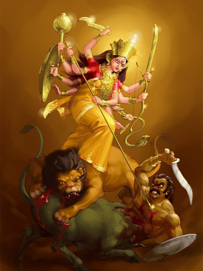

॥ महिषासुरमर्दिनिस्तोत्रम् ॥

अयि गिरिनंदिनि नंदितमेदिनि विश्वविनोदिनि नंदनुते
गिरिवरविंध्यशिरोधिनिवासिनि विष्णुविलासिनि जिष्णुनुते ।
भगवति हे शितिकण्ठकुटुंबिनि भूरिकुटुंबिनि भूरिकृते
जय जय हे महिषासुरमर्दिनि रम्यकपर्दिनि शैलसुते ॥ १ ॥
सुरवरवर्षिणि दुर्धरधर्षिणि दुर्मुखमर्षिणि हर्षरते
त्रिभुवनपोषिणि शंकरतोषिणि किल्बिषमोषिणि घोषरते ।
दनुजनिरोषिणि दितिसुतरोषिणि दुर्मदशोषिणि सिन्धुसुते
जय जय हे महिषासुरमर्दिनि रम्यकपर्दिनि शैलसुते ॥ २ ॥
अयि जगदंब मदंब कदंबवनप्रियवासिनि हासरते
शिखरिशिरोमणितुङ्गहिमालयशृंगनिजालयमध्यगते ।
मधुमधुरे मधुकैटभगंजिनि कैटभभंजिनि रासरते
जय जय हे महिषासुरमर्दिनि रम्यकपर्दिनि शैलसुते ॥ ३ ॥
अयि शतखण्डविखण्डितरुण्डवितुण्डितशुण्डगजाधिपते
रिपुगजगण्डविदारणचण्डपराक्रमशुण्ड मृगाधिपते ।
निजभुजदण्डनिपातितखण्डविपातितमुण्डभटाधिपते
जय जय हे महिषासुरमर्दिनि रम्यकपर्दिनि शैलसुते ॥ ४ ॥
अयि रणदुर्मदशत्रुवधोदितदुर्धरनिर्जरशक्तिभृते
चतुरविचारधुरीणमहाशिवदूतकृतप्रमथाधिपते ।
दुरितदुरीहदुराशयदुर्मतिदानवदूतकृतांतमते
जय जय हे महिषासुरमर्दिनि रम्यकपर्दिनि शैलसुते ॥ ५ ॥
अयि शरणागतवैरिवधूवरवीरवराभयदायकरे
त्रिभुवनमस्तकशूलविरोधिशिरोधिकृतामलशूलकरे ।
दुमिदुमितामरदुंदुभिनादमहोमुखरीकृततिग्मकरे
जय जय हे महिषासुरमर्दिनि रम्यकपर्दिनि शैलसुते ॥ ६ ॥
अयि निजहुँकृतिमात्रनिराकृतधूम्रविलोचनधूम्रशते
समरविशोषितशोणितबीजसमुद्भवशोणितबीजलते ।
शिवशिव शुंभनिशुंभमहाहवतर्पितभूतपिशाचरते
जय जय हे महिषासुरमर्दिनि रम्यकपर्दिनि शैलसुते ॥ ७ ॥
धनुरनुसंगरणक्षणसंगपरिस्फुरदंगनटत्कटके
कनकपिशंगपृषत्कनिषंगरसद्भटशृंगहतावटुके ।
कृतचतुरङ्गबलक्षितिरङ्गघटद्बहुरङ्गरटद्बटुके
जय जय हे महिषासुरमर्दिनि रम्यकपर्दिनि शैलसुते ॥ ८ ॥
सुरललनाततथेयितथेयितथाभिनयोत्तरनृत्यरते
हासविलासहुलासमयि प्रणतार्तजनेऽमितप्रेमभरे ।
धिमिकिटधिक्कटधिकटधिमिध्वनिघोरमृदंगनिनादरते
जय जय हे महिषासुरमर्दिनि रम्यकपर्दिनि शैलसुते ॥ ९ ॥
जय जय जप्यजये जयशब्दपरस्तुतितत्परविश्वनुते
झणझणझिञ्झिमिझिंकृतनूपुरसिंजितमोहितभूतपते ।
नटितनटार्धनटीनटनायकनाटितनाट्यसुगानरते
जय जय हे महिषासुरमर्दिनि रम्यकपर्दिनि शैलसुते ॥ १० ॥
अयि सुमनःसुमनः सुमनः सुमनः सुमनोहरकांतियुते
श्रितरजनीरजनीरजनीरजनीरजनीकरवक्त्रवृते ।
सुनयनविभ्रमरभ्रमरभ्रमरभ्रमरभ्रमराधिपते
जय जय हे महिषासुरमर्दिनि रम्यकपर्दिनि शैलसुते ॥ ११ ॥
सहितमहाहवमल्लमतल्लिकमल्लितरल्लकमल्लरते
विरचितवल्लिकपल्लिकमल्लिकझिल्लिकभिल्लिकवर्गवृते ।
सितकृतफुल्लिसमुल्लसितारुणतल्लजपल्लवसल्ललिते
जय जय हे महिषासुरमर्दिनि रम्यकपर्दिनि शैलसुते ॥ १२ ॥
अविरलगण्डगलन्मदमेदुरमत्तमतङ्गजराजपते
त्रिभुवनभूषणभूतकलानिधिरूपपयोनिधिराजसुते ।
अयि सुदती जनलालसमानसमोहनमन्मथराजसुते
जय जय हे महिषासुरमर्दिनि रम्यकपर्दिनि शैलसुते ॥ १३ ॥
कमलदलामलकोमलकांतिकलाकलितामलभाललते
सकलविलासकलानिलयक्रमकेलिचलत्कलहंसकुले ।
अलिकुलसङ्कुलकुवलयमण्डलमौलिमिलद्भकुलालिकुले
जय जय हे महिषासुरमर्दिनि रम्यकपर्दिनि शैलसुते ॥ १४ ॥
करमुरलीरववीजितकूजितलज्जितकोकिलमञ्जुमते
मिलितपुलिन्दमनोहरगुञ्जितरञ्जितशैलनिकुञ्जगते ।
निजगुणभूतमहाशबरीगणसद्गुणसंभृतकेलितले
जय जय हे महिषासुरमर्दिनि रम्यकपर्दिनि शैलसुते ॥ १५ ॥
कटितटपीतदुकूलविचित्रमयूखतिरस्कृतचंद्ररुचे
प्रणतसुरासुरमौलिमणिस्फुरदंशुलसन्नखचंद्ररुचे ।
जितकनकाचलमौलिपदोर्जितनिर्झरकुंजरकुंभकुचे
जय जय हे महिषासुरमर्दिनि रम्यकपर्दिनि शैलसुते ॥ १६ ॥
विजितसहस्रकरैकसहस्रकरैकसहस्रकरैकनुते
कृतसुरतारकसङ्गरतारकसङ्गरतारकसूनुसुते ।
सुरथसमाधिसमानसमाधिसमाधिसमाधिसुजातरते
जय जय हे महिषासुरमर्दिनि रम्यकपर्दिनि शैलसुते ॥ १७ ॥
पदकमलं करुणानिलये वरिवस्यति योऽनुदिनं स शिवे
अयि कमले कमलानिलये कमलानिलयः स कथं न भवेत् ।
तव पदमेव परंपदमेवमनुशीलयतो मम किं न शिवे
जय जय हे महिषासुरमर्दिनि रम्यकपर्दिनि शैलसुते ॥ १८ ॥
कनकलसत्कलसिन्धुजलैरनुसिञ्चिनुते गुण रङ्गभुवं
भजति स किं न शचीकुचकुंभतटीपरिरंभसुखानुभवम् ।
तव चरणं शरणं करवाणि नतामरवाणिनिवासि शिवं
जय जय हे महिषासुरमर्दिनि रम्यकपर्दिनि शैलसुते ॥ १९ ॥
तव विमलेन्दुकुलं वदनेन्दुमलं सकलं ननु कूलयते
किमु पुरुहूतपुरीन्दुमुखीसुमुखीभिरसौ विमुखीक्रियते ।
मम तु मतं शिवनामधने भवती कृपया किमुत क्रियते
जय जय हे महिषासुरमर्दिनि रम्यकपर्दिनि शैलसुते ॥ २० ॥
अयि मयि दीनदयालुतया कृपयैव त्वया भवितव्यमुमे
अयि जगतो जननी कृपयासि यथासि तथाऽनुमितासि रते ।
यदुचितमत्र भवत्युररीकुरुतादुरुतापमपाकुरुते
जय जय हे महिषासुरमर्दिनि रम्यकपर्दिनि शैलसुते ॥ २१ ॥
इति श्रीमहिषासुरमर्दिनि स्तोत्रं सम्पूर्णम् ॥
.. махиша̄сурамардинистотрам ..
айи гиринам̣дини нам̣дитамэдини виш́вавинодини нам̣данутэ
гириваравим̣дхйаш́иродхинива̄сини вишн̣увила̄сини джишн̣унутэ .
бхагавати хэ ш́итикан̣т̣хакут̣ум̣бини бхӯрикут̣ум̣бини бхӯрикр̣тэ
джайа джайа хэ махиша̄сурамардини рамйакапардини ш́аиласутэ .. 1 ..
суравараваршин̣и дурдхарадхаршин̣и дурмукхамаршин̣и харшаратэ
трибхуванапошин̣и ш́ам̣каратошин̣и килбишамошин̣и гхошаратэ .
дануджанирошин̣и дитисутарошин̣и дурмадаш́ошин̣и синдхусутэ
джайа джайа хэ махиша̄сурамардини рамйакапардини ш́аиласутэ .. 2 ..
айи джагадам̣ба мадам̣ба кадам̣баванаприйава̄сини ха̄саратэ
ш́икхариш́ироман̣итун̇гахима̄лайаш́р̣м̣ганиджа̄лайамадхйагатэ .
мадхумадхурэ мадхукаит̣абхагам̣джини каит̣абхабхам̣джини ра̄саратэ
джайа джайа хэ махиша̄сурамардини рамйакапардини ш́аиласутэ .. 3 ..
айи ш́атакхан̣д̣авикхан̣д̣итарун̣д̣авитун̣д̣иташ́ун̣д̣агаджа̄дхипатэ
рипугаджаган̣д̣авида̄ран̣ачан̣д̣апара̄крамаш́ун̣д̣а мр̣га̄дхипатэ .
ниджабхуджадан̣д̣анипа̄титакхан̣д̣авипа̄титамун̣д̣абхат̣а̄дхипатэ
джайа джайа хэ махиша̄сурамардини рамйакапардини ш́аиласутэ .. 4 ..
айи ран̣адурмадаш́атрувадходитадурдхаранирджараш́актибхр̣тэ
чатуравича̄радхурӣн̣амаха̄ш́ивадӯтакр̣тапраматха̄дхипатэ .
дуритадурӣхадура̄ш́айадурматида̄навадӯтакр̣та̄м̣таматэ
джайа джайа хэ махиша̄сурамардини рамйакапардини ш́аиласутэ .. 5 ..
айи ш́аран̣а̄гатаваиривадхӯваравӣравара̄бхайада̄йакарэ
трибхуванамастакаш́ӯлавиродхиш́иродхикр̣та̄малаш́ӯлакарэ .
думидумита̄марадум̣дубхина̄дамахомукхарӣкр̣татигмакарэ
джайа джайа хэ махиша̄сурамардини рамйакапардини ш́аиласутэ .. 6 ..
айи ниджахум̇кр̣тима̄транира̄кр̣тадхӯмравилочанадхӯмраш́атэ
самаравиш́ошиташ́он̣итабӣджасамудбхаваш́он̣итабӣджалатэ .
ш́иваш́ива ш́ум̣бханиш́ум̣бхамаха̄хаватарпитабхӯтапиш́а̄чаратэ
джайа джайа хэ махиша̄сурамардини рамйакапардини ш́аиласутэ .. 7 ..
дхануранусам̣гаран̣акшан̣асам̣гапариспхурадам̣ганат̣аткат̣акэ
канакапиш́ам̣гапр̣шатканишам̣гарасадбхат̣аш́р̣м̣гахата̄ват̣укэ .
кр̣тачатуран̇габалакшитиран̇гагхат̣адбахуран̇гарат̣адбат̣укэ
джайа джайа хэ махиша̄сурамардини рамйакапардини ш́аиласутэ .. 8 ..
суралалана̄тататхэйитатхэйитатха̄бхинайоттаранр̣тйаратэ
ха̄савила̄сахула̄самайи пран̣ата̄ртаджанэ'митапрэмабхарэ .
дхимикит̣адхиккат̣адхикат̣адхимидхванигхорамр̣дам̣ганина̄даратэ
джайа джайа хэ махиша̄сурамардини рамйакапардини ш́аиласутэ .. 9 ..
джайа джайа джапйаджайэ джайаш́абдапарастутитатпаравиш́ванутэ
джхан̣аджхан̣аджхин̃джхимиджхим̣кр̣танӯпурасим̣джитамохитабхӯтапатэ .
нат̣итанат̣а̄рдханат̣ӣнат̣ана̄йакана̄т̣итана̄т̣йасуга̄наратэ
джайа джайа хэ махиша̄сурамардини рамйакапардини ш́аиласутэ .. 10 ..
айи суманах̣суманах̣ суманах̣ суманах̣ суманохарака̄м̣тийутэ
ш́ритараджанӣраджанӣраджанӣраджанӣраджанӣкаравактравр̣тэ .
сунайанавибхрамарабхрамарабхрамарабхрамарабхрамара̄дхипатэ
джайа джайа хэ махиша̄сурамардини рамйакапардини ш́аиласутэ .. 11 ..
сахитамаха̄хавамалламаталликамаллитараллакамалларатэ
вирачитавалликапалликамалликаджхилликабхилликаваргавр̣тэ .
ситакр̣тапхуллисамулласита̄рун̣аталладжапаллавасаллалитэ
джайа джайа хэ махиша̄сурамардини рамйакапардини ш́аиласутэ .. 12 ..
авиралаган̣д̣агаланмадамэдураматтаматан̇гаджара̄джапатэ
трибхуванабхӯшан̣абхӯтакала̄нидхирӯпапайонидхира̄джасутэ .
айи судатӣ джанала̄ласама̄насамоханаманматхара̄джасутэ
джайа джайа хэ махиша̄сурамардини рамйакапардини ш́аиласутэ .. 13 ..
камаладала̄малакомалака̄м̣тикала̄калита̄малабха̄лалатэ
сакалавила̄сакала̄нилайакрамакэличалаткалахам̣сакулэ .
аликуласан̇кулакувалайаман̣д̣аламаулимиладбхакула̄ликулэ
джайа джайа хэ махиша̄сурамардини рамйакапардини ш́аиласутэ .. 14 ..
карамуралӣрававӣджитакӯджиталаджджитакокиламан̃джуматэ
милитапулиндаманохарагун̃джитаран̃джиташ́аиланикун̃джагатэ .
ниджагун̣абхӯтамаха̄ш́абарӣган̣асадгун̣асам̣бхр̣такэлиталэ
джайа джайа хэ махиша̄сурамардини рамйакапардини ш́аиласутэ .. 15 ..
кат̣итат̣апӣтадукӯлавичитрамайӯкхатираскр̣тачам̣драручэ
пран̣атасура̄сурамаулиман̣испхурадам̣ш́уласаннакхачам̣драручэ .
джитаканака̄чаламаулипадорджитанирджхаракум̣джаракум̣бхакучэ
джайа джайа хэ махиша̄сурамардини рамйакапардини ш́аиласутэ .. 16 ..
виджитасахасракараикасахасракараикасахасракараиканутэ
кр̣тасурата̄ракасан̇гарата̄ракасан̇гарата̄ракасӯнусутэ .
суратхасама̄дхисама̄насама̄дхисама̄дхисама̄дхисуджа̄таратэ
джайа джайа хэ махиша̄сурамардини рамйакапардини ш́аиласутэ .. 17 ..
падакамалам̣ карун̣а̄нилайэ варивасйати йо'нудинам̣ са ш́ивэ
айи камалэ камала̄нилайэ камала̄нилайах̣ са катхам̣ на бхавэт .
тава падамэва парам̣падамэвамануш́ӣлайато мама ким̣ на ш́ивэ
джайа джайа хэ махиша̄сурамардини рамйакапардини ш́аиласутэ .. 18 ..
канакаласаткаласиндхуджалаиранусин̃чинутэ гун̣а ран̇габхувам̣
бхаджати са ким̣ на ш́ачӣкучакум̣бхатат̣ӣпарирам̣бхасукха̄нубхавам .
тава чаран̣ам̣ ш́аран̣ам̣ карава̄н̣и ната̄марава̄н̣инива̄си ш́ивам̣
джайа джайа хэ махиша̄сурамардини рамйакапардини ш́аиласутэ .. 19 ..
тава вималэндукулам̣ ваданэндумалам̣ сакалам̣ нану кӯлайатэ
киму пурухӯтапурӣндумукхӣсумукхӣбхирасау вимукхӣкрийатэ .
мама ту матам̣ ш́ивана̄мадханэ бхаватӣ кр̣пайа̄ кимута крийатэ
джайа джайа хэ махиша̄сурамардини рамйакапардини ш́аиласутэ .. 20 ..
айи майи дӣнадайа̄лутайа̄ кр̣пайаива твайа̄ бхавитавйамумэ
айи джагато джананӣ кр̣пайа̄си йатха̄си татха̄'нумита̄си ратэ .
йадучитаматра бхаватйурарӣкурута̄дурута̄памапа̄курутэ
джайа джайа хэ махиша̄сурамардини рамйакапардини ш́аиласутэ .. 21..
ити ш́рӣмахиша̄сурамардини стотрам̣ сампӯрн̣ам ..
O daughter of the mountain, who makes the whole earth happy, who makes the whole universe rejoice, praised by Nandin. dwelling on the peak of the great Vindhya mountain, glittering widely, (variation? giver of joy to Vishnu), praised by those desirous of victory. O Goddess, wife of the blue necked Siva, One who has many families, One who has done a lot,. be victorious, be victorious, O destroyer of the demon mahisa, with beautiful braids of hair, daughter of the mountain Himalaya. (1)
O bestower of boons on Gods, One who assails those hard to control, who tolerates those with ugly faces (?), one engrossed in rejoicing. One who nourishes the three worlds, One who pleases sankara, One who removes sins, One who engrosses in sound of Om (?). One who is angry with the progeny of Danu (demon), One who is angry with the sons of Diti (also demon), One who destroys those with evil intoxication of pride, daughter of the ocean. (2)
O mother of the world, my mother, One who loves to dwell in a forest of Kadamba trees, One who keeps on smiling. One who is on her own dwelling on the tall peak of the Himalaya, the greatest among the mountains. One who is very sweet like honey, One who has the treasure of demons Madhu and Kaitabha, destroyer of the demon Kaitabha, engaged in dancing. (3)
O One who split the heads (of demons) into hundreds of pieces and One who cut the trunks of great battle elephants. whose great lion is skilled in terrifying valor in tearing apart the temples of enemy elephants. One who has cut down into pieces the heads of enemy chieftains with the strength of her own arms. (4)
O One who holds the invincible and undiminishing striking force which arose on the occasion of killing the enemies who were hard to subdue on the battlefield. who made Pramatha, the great attendant of Shiva, a leader in subtle thinking, her commander (?). who decided to destroy the messenger of demons who were sinful, with evil intentions, thoughts and mind. (5)
O One who gives protection to the great heroic husbands of the enemy wives who have come seeking refuge. One who holds in her hands a spotless spear pointed towards the head of the opponent who is causing a great pain for all the three worlds. One who is like the blazing hot sun, aroused by the power of resounding noise of the drums of Gods. (6)
O One who has blown aside hundreds of streams of smoke coming from demons with smoking eyes merely with her own roaring. who is like a vine of blood-drops grown from the dried blood drops in battle. One who delights in the company of auspicious Shiva, Shumbha, Nishumbha, and the spirits who were fed during the great battle. (7)
One who decks herself with dancing ornaments on throbbing limbs at the moment of the battle, making her bow ready. who killed the huge enemy soldiers with a shining sword and with (arrows from) a quiver which has golden brown spots. who made the battleground with fourfold army into a stage with a colorful drama with screaming little soldiers. (8)
O you who take delight in the dancing of heavenly damsels made excellent by the acting out of tatatheyi-tatheyi-tatha/tathA! O you who are full of laughter, amorous gestures and hulAsa (meaning uncertain, but probably something along the lines of abandon)! O you who possess immeasurable love for afflicted persons bowing before you (i.e., seeking refuge in you)! O you who rejoice in the sustained/deep sound, dhimikaTa-dhikkaTa-dhikaTadhimi, of the mRdaGga drum! O vanquisher of the demon MahiSa! O one bearing attractive knotted hair! O daughter of the mountain! Victory to you! (9)
Be victorious! be victorious! whose victory should be sung, praised by the whole universe ready to sing the praise extolling her victory. who attracted the attention of shiva by twinkling of bells making various sounds of dancing. who delights in beautiful singing and in dance-drama presented by a leading dancer acting out the role of an actress with half of his body. (10)
O Divine Mother, I invoke You and take refuge in Your Auspicious Feet) Salutations to You O Divine Mother; I Invoke You; Whose Beautiful Mind is United with a Charming Appearance, (I Invoke You) Whose Beautiful Face makes Subserviant the Beauty of the Moon Light of Night by Hiding them with Its Own Beauty, Whose Beautiful Eyes Conquer the Beauty of the Bees by Its Own Beauty, Victory to You, Victory to You, (I take Refuge in Your Auspicious Feet) O the Destroyer of Demon Mahishasura; (Victory to You) Who Shine with Beautiful Locks of Hair and Who is the Daughter of the Mountain. (11)
Salutations to the Divine Mother who is accompanied in the great battle against excellent wrestlers (fighters), by girls who appear tender like jasmine who are fighting against the enemies. whose accompaniments are composed of girls from the bheel tribe who are tender like creepers of village jasmine and buzz like swarms of bees (or crickets). On whose face plays a smile created By joy which appears like dawn shining forth with red colour and blossoming the excellent buds. Victory to you, the destroyer of the demon Mahishasura, who has beautiful locks of hair and who is the daughter of the mountain. (12)
Who is in charge of huge royal elephants in fury whose rut is streaming down their temples incessantly. princess, the daughter of the ocean, who has the beauty of the moon, the ornament of all the three worlds. princess of cupid who enchants the minds desirous of ladies with beautiful teeth. (13)
Whose spotless forehead is enhanced by the beautiful complexion, pure and delicate like that of lotus petals. whose flock of swans is moving sportingly with steps which are the marks of all beautiful arts. whose bees from the bakula trees meet on the tops of lotus flowers which are crowded with (their own) bees. (14)
Whose sweet cooing sounds made with the flute held in her own hands have put to shame the Kokila bird and who has sweet thoughts. who is in colorful mountain groves pleasantly resounding with the assembled mountain folks. whose playbround is filled with good qualities of the flocks of the great tribal women who are manifestations of her own qualities. (15)
Who has set aside the brilliance of the moon with the colorful rays coming from the yellow silk she is wearing on her waist. whose toe-nails shine like the moon because of the rays emanating form the crest jewels of the bowing gods and demons. whose breasts outshine the temples of wild elephants and the high peaks of the golden mountains. (16)
Oh Goddess, the only time praised by the thousand hands of Sahasrarjuna who had excelled the thousand-rayed Sun by his valour, having a son like Karttika who had fought a victorious battle in the clash between gods and Tarakasura, one for whom pleasure is created in the accomplishment (accorded by Şage Medhas) by giving justification for the self-same mental agony of (King) Suratha and (the vaisya) Samadhi, who has crushed the demon. Mahisha, wearing a charming knot of hair, Oh Daughter of Mountain (Himalaya), Victory to you, Victory to you. (17)
O benevolent goddess accompanied by Shiva, if someone daily cherishes your lotuslike feet. (contd. from prev line) then, O lotus dwelling LakShmi, how will he not become wealthy?. O auspicious Goddess, is there anything that I would not have, if I earnestly believe that your feet are the highest goal to be achieved? (18)
If someone bathes you, the playground of virtues, with shining golden waters of the ocean. will he not experience in heaven the happiness (equal to that of Indra) embracing the full bosom of Sachi?. O Goddess worshipped by the speech of Gods, I take refuge in your feet, which are also the abode of Shiva. (19)
Oh Pure One, the person who looks upon your moonlike face together with its digits causing a bond (with your essence) as the bank (beyond which the river of sorrow does not proceed) - will he ever be turned away by the ladies of Indra's City, having moonlike faces and auspicious faces? Oh Goddess, having the name of Siva as her treasure, or my opinion is that with kindness you achieve it. Oh Goddess, who has crushed the demon, Mahisha, wearing a beatiful know of hair, Oh Daughter of Mountain (Himalaya), Victory to you, Victory to you. (20)
O Uma, you should be kindly disposed toward me because of your virtue of compassion toward the meek. (meaning unclear). you may choose to do (with me) whatever is appropriate, she removes the great pain (of her devotees). (21)